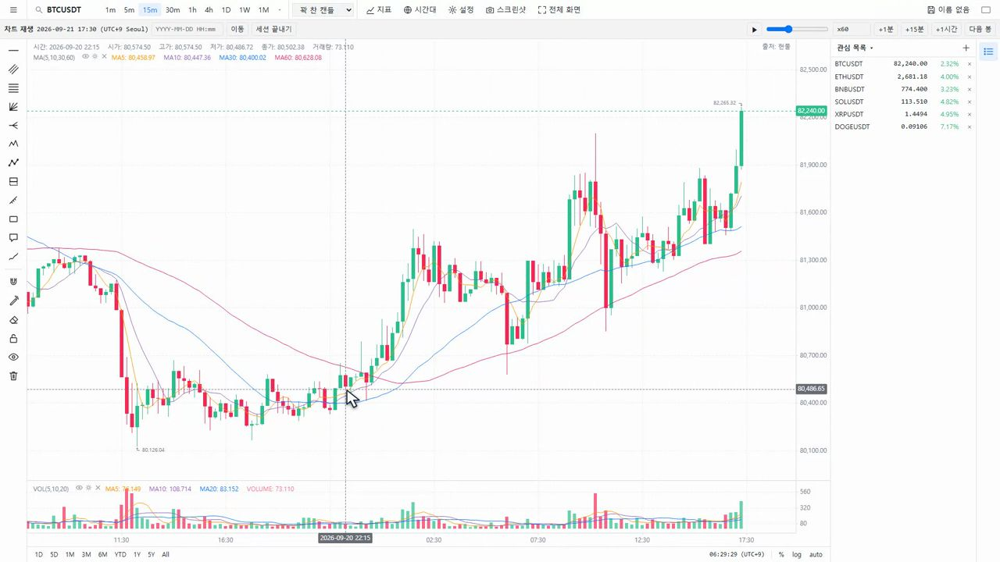
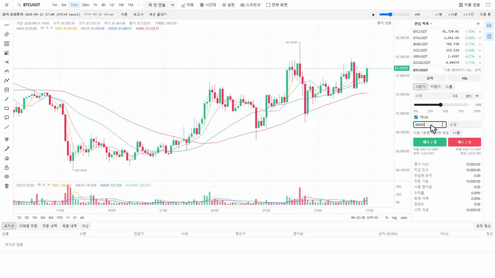
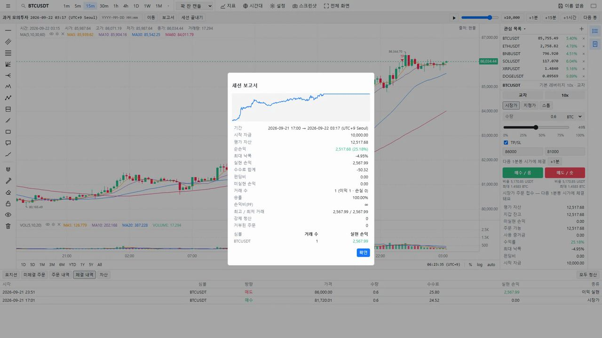
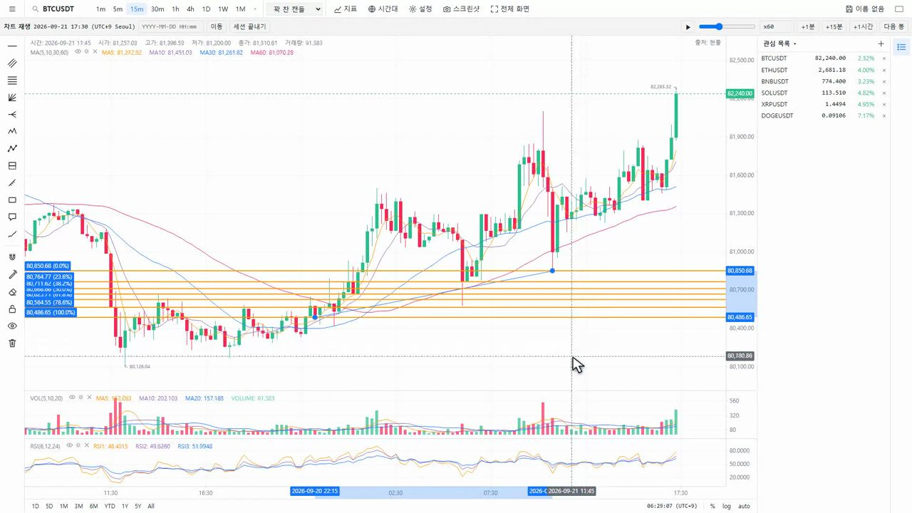
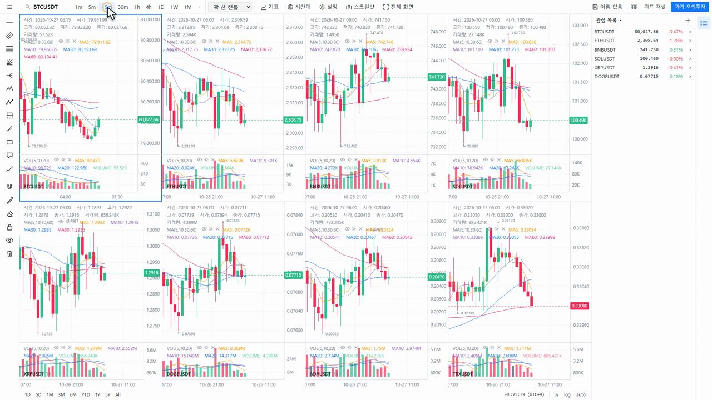
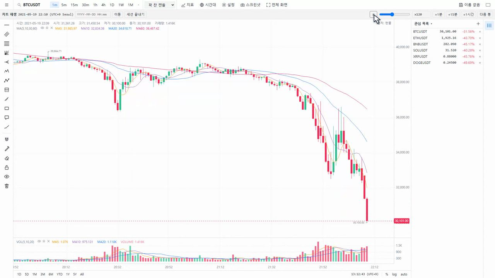
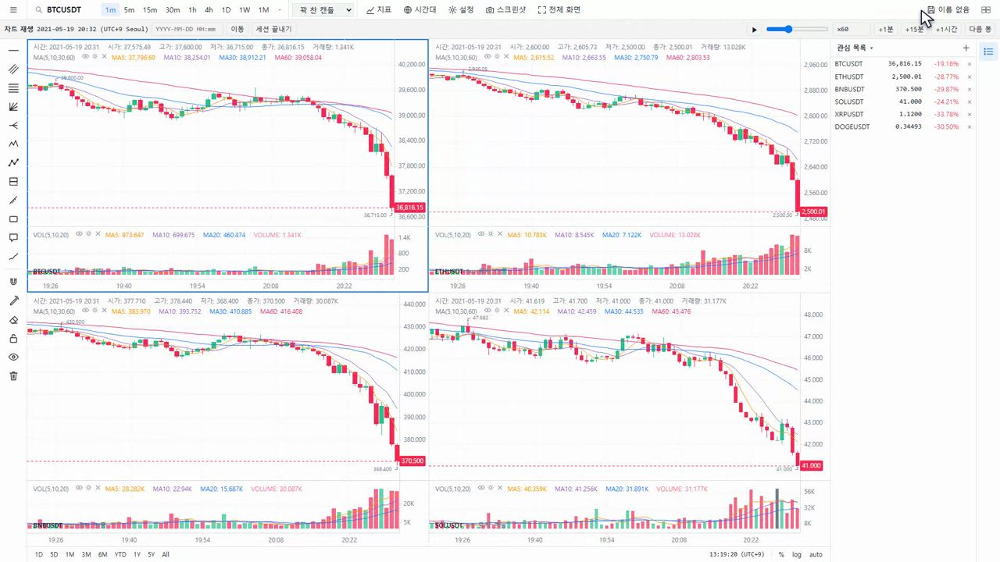

01 / REPLAY
그날에서 멈추고, 다시 재생
날짜를 고르면 그 뒤의 봉은 가려져요. 지루한 구간은 몇백 배속으로 넘기고, 중요한 자리에선 딱 멈춰요.


우아한차트 · 차트 트레이딩 게임
과거 차트로 하는 트레이딩 게임
영상을 아직 불러올 수 없어요. 잠시 후 다시 확인해 주세요. 아래에서 실제 화면과 기능을 먼저 살펴볼 수 있어요.
01 / PRACTICE, THEN REPLAY
차트를 다 보고 하는 복기와는 달라요. 다음 봉을 모르는 자리에서 판단하고, 재생을 눌러 결과를 확인해요.
날짜를 고르면 그 뒤의 봉은 가려져요. 지루한 구간은 몇백 배속으로 넘기고, 중요한 자리에선 딱 멈춰요.

롱·숏, 익절·손절, 레버리지와 교차·격리까지. 내 판단을 모의 주문으로 남겨요. 거래소 계정 연결도, 실제 주문도 없어요.

끝나면 리포트가 나와요. 얼마 벌고 얼마 잃었는지, 계좌가 제일 깊이 빠졌던 순간까지 숨김없이요.

그리기 도구 65개와 지표 75개. 선을 긋고 봉을 하나씩 넘겨요. 내 선이 버텼는지, 깨졌는지 바로 보여요.

화면을 1개부터 8개까지 나눠요. 시계가 하나라서, 서로 다른 코인의 움직임을 같은 시점에서 비교할 수 있어요.

하루짜리 긴 꼬리 안에서 무슨 일이 있었을까요? 바이낸스 공개 시세로 그 하루를 봉 하나씩 다시 겪어 봐요.

화면을 누르면 원본 크기로 볼 수 있어요. 리포트 수치는 모의 매매 예시예요.
02 / REVISIT 2021.05.19
비트코인, 이더리움, BNB, 솔라나. 화면을 넷으로 나누면 네 코인이 같은 순간에 무너져요. 하나의 시계로 그날의 장을 다시 따라가요.
−31.5%2021.05.19 · BTC 급락 사례*

03 / LIFETIME LICENSE
우아한차트는 앞으로 구독제로 바뀌어요. 지금 안내하는 평생판은 아는 분들을 위한 라이선스예요.
한 번 결제하면 평생 사용해요.
결제 창은 준비 중이에요.
$250USD / 한 번 결제
평생 사용 라이선스
결제 준비 중 · 현재는 구매할 수 없어요.
04 / GET SET UP
Windows와 Mac의 데스크톱 크롬에서 사용해요. 설치 파일과 라이선스 키를 받은 뒤 진행하는 순서예요.
안내받은 우아한차트 설치 파일을 내려받고 압축을 풀어요. 압축을 푼 폴더는 계속 사용할 위치에 보관해 주세요.
크롬 주소창에 chrome://extensions를 입력해요. 확장 프로그램 관리 화면에서 개발자 모드를 켜 주세요.
압축 해제된 확장 프로그램을 로드합니다를 눌러 압축을 푼 폴더를 선택해요. 우아한차트를 열고 라이선스 키를 입력하면 돼요.
모바일 앱이 아닌 데스크톱 크롬 확장 프로그램이에요. 설치 파일 배포와 결제는 준비 중이에요.
05 / A FEW ANSWERS
아니요. 우아한차트는 과거 차트로 하는 트레이딩 게임이에요. 게임 속 매매에는 가상 자금만 사용해요. 거래소 계정을 연결하지 않고 실제 주문도 보내지 않아요. 게임을 이용하기 위한 라이선스 비용은 별도예요.
바이낸스의 공개 시세 데이터를 사용해요. 거래소 계정 연결은 필요 없어요. 조회 가능한 과거 구간은 코인별 상장 시점과 공개 데이터 제공 범위에 따라 달라져요.
라이선스 하나로 컴퓨터 2대에서 사용할 수 있어요.
네. Mac과 Windows의 데스크톱 크롬에서 확장 프로그램으로 설치해 사용해요. 스마트폰용 크롬에서는 사용할 수 없어요.
새 버전의 배포 방식과 적용 절차는 배포 시 안내할 예정이에요. 평생판의 업데이트 제공 범위와 세부 정책도 결제 시작 전에 안내할게요.
그 자리가 다시 오기 전에,
한 번 더 겪어 보는 거예요.다음 봉을 모르는 연습. 우아한차트.